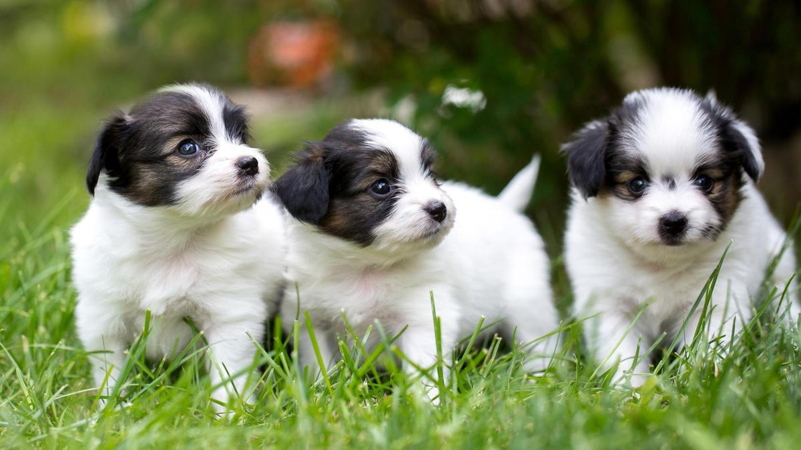

| Nivel de lindura | Suma de teblores |
|---|---|
| Nivel 8 | +++++ |
| Nivel B | Muy fuerte |
Los 3 cachorros del mundo
Estos hermosos perros poseen una cualidad muy especial: su capacidad de derretir corazones con solo mirarlos. Cada gesto, desde la inclinación de su cabeza hasta el movimiento de sus orejas o el brillo de sus ojos, parece transmitir ternura en su máxima expresión, provocando que quienes los observan sientan una emoción inmediata y profunda. No solo son adorables por su apariencia, sino también por sus actitudes juguetonas y afectuosas, que reflejan una combinación perfecta de inocencia y cariño.
Al interactuar con ellos, es común que las personas experimenten una sensación de alegría y tranquilidad, ya que estos perros irradian emociones positivas que parecen “temblar al mundo por su ternura”. Esta expresión no es literal, sino una forma poética de decir que su presencia tiene un impacto emocional tan fuerte que puede cambiar el ánimo de cualquiera, incluso en los días más grises.
En muchos casos, su ternura se convierte en un vínculo emocional único, capaz de enseñar valores como la empatía, la paciencia y el cuidado hacia los demás. Por eso, estos perros no solo son hermosos por fuera, sino también por la capacidad de transmitir amor y calidez, convirtiéndose en compañeros insustituibles y en un recordatorio de que la ternura tiene un poder que va mucho más allá de lo físico: puede tocar corazones y alegrar vidas.
